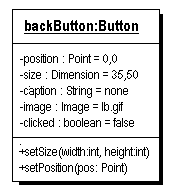

State and Behavior

The second property is object state. The state of an object includes all the information about the object at a particular time. Take a look at the "Back" button on your Web browser. The UML (Unified Modeling Language) object diagram to the right displays a Button object named backButton. A Button object might have attributes like:
- Position: where the button is located on the screen
- Size: the button's width and height
- Caption: any text, such as the word "Back," that the button displays
- Image: any icon or image that is displayed on the button's surface
- Clicked: whether or not the button is currently selected (pressed)
The state of the object is represented by the values of those attributes. The backButton may display an arrow image but no text, and, if you click on the button with your mouse, its clicked state may change from false to true.
Object Behavior

The third property shared by all objects, and what differentiates them from structure types, is behavior. The behavior of an object consists of the messages that it responds to.
In the UML diagram on the right, the behavior is implemented by the member functions appearing in the bottom portion of the box. You ask the backButton object to change its size, for instance, by sending it a message with the desired size like this:
backButton.setSize(300, 100);Since the backButton object has a setSize() member function, (as shown in the UML diagram), it does as you've asked.
 This course content is offered under a
CC
Attribution Non-Commercial license. Content in this course
can be considered under this license unless otherwise noted.
This course content is offered under a
CC
Attribution Non-Commercial license. Content in this course
can be considered under this license unless otherwise noted.